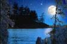
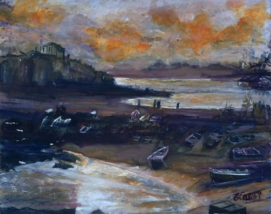
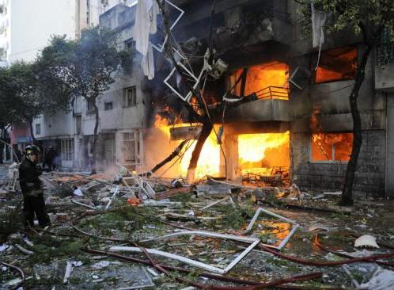
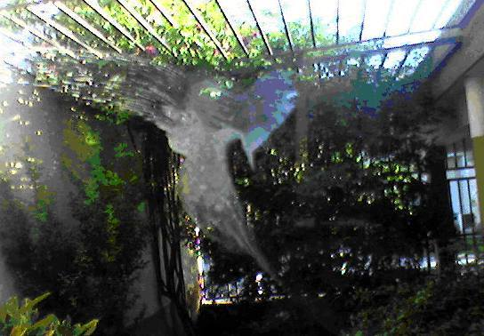
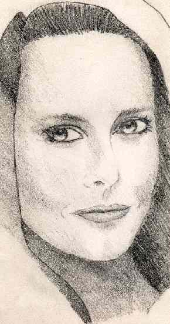
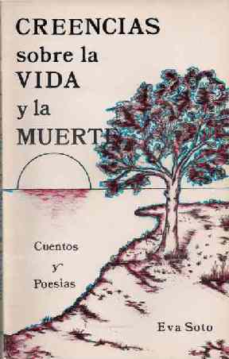
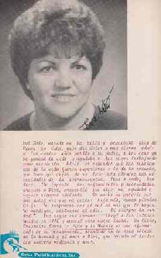
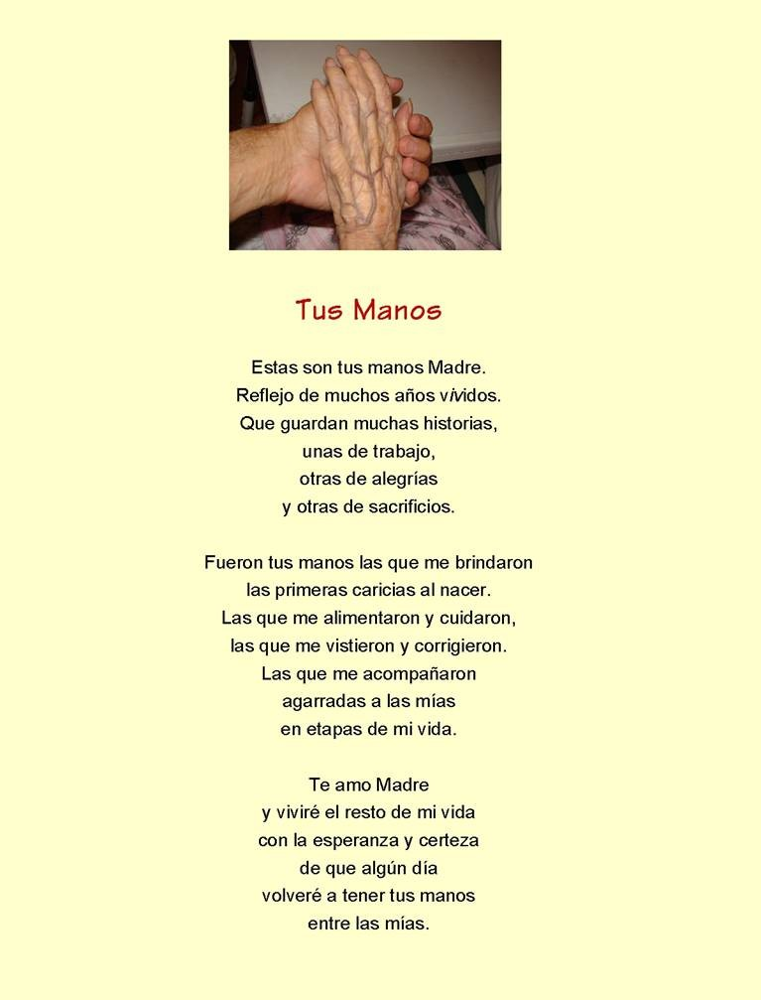
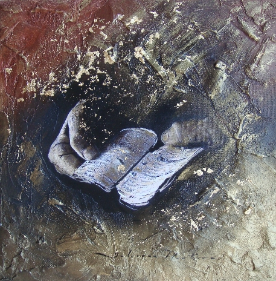

Luna...
Luna...
 |
¡Nuevo! ¡Ay!, tiempo… tan lejos nos llevas… |
 |
Autor: Florencio Casartelli
|
¡Nuevo! madrugada en Bs As del 20/05/96 Inés Setuain
|
|
Lilian Inés Setuain Burman Mansíllense residente en Concordia. Docente, escritora, buceadora sensible, inquieta e incansable de las profundidades de la Luz y la Verdad y me definiría con este soliloquio: buceadora, zíngara, poseedora de los Códigos del guerrero, quizás algunos títulos académicos guardados en algún arcón. Su trabajo apunta a la psicología transpersonal junto a sus fieles trabajadoras y develadoras Flores de Bach. |
Algunos aportes anteriores
Tragedia en Rosario, Argentina....2013 CALLE SALTA – ROSARIO
Y se hizo noche el día
|
 |
Bomberos afanosos ¿Servirá esto de ejemplo |
|
A nuestros ángeles...Vivencias
San Miguel de Tucumán, Diciembre de 2008 Hace muchos años que descubrí que
los Ángeles son mucho más que un dulce cuento o una oración
que nos tranquiliza en la niñez. Mi Ángel se manifestó
sutilmente tantas veces en mi vida, María Yolanda Veliz de Esper 
|
¿Qué pasó con tu trabajo? Es que estabas distraído paseando entre querubines… ¿O acaso estabas dormido? Yo te pregunto qué hacías cuando la bomba se armaba, cuando su onda expansiva, a tantos seres mataba. Ángel custodio del hombre al que Dios te encomendó, ¿por qué no cuidas sus hijos, como Él te lo ordenó? Debe Dios darte un castigo que no lo olvides jamás, debe enviarte muy lejos, y que no regreses más. Tienes que irte al infierno con tu hermano Lucifer, debes pagar tu soberbia, como él, la pagó ayer. ¡Porque permites la guerra, el atentado, el horror! ¡Porque tantos inocentes se inmolaron por tu error! ¿Qué podrás hacer ahora al llegar a su presencia? ¿Cómo enfrentarás su furia, qué le dirás de tu ausencia? Ángel custodio del mundo: ¡Vete, hacedor de amarguras! Y que Dios vigile solo, lo que hacen sus criaturas. A este poema lo escribí esa terrible mañana de invierno, después de haber visto por la televisión la destrucción de la AMIA, y se lo mandé a mis amigos judíos Marta y Marcos. Nunca voy a olvidar esas horas y horas que pasé llorando frente a la pantalla, presa de la impotencia. Jamás lo publiqué, lo hago ahora, después de tantos años, por consejo de mi amiga Iael Pribluda Vered, de Israel, a quién se lo mandé ayer. No sé si tiene valor literario, pero para mí tiene un hondo valor sentimental... Abrazos Marga Marga Mangione 18 de julio de 1994 |
Ángel custodio
Ángel custodio del cielo: ¿Dónde estabas escondido, cuando esa mano asesina, mató a tantos argentinos? ¿Dios no te dio la tarea de cuidar a su rebaño? ¿Por qué te ausentas y dejas, que nos hagan tanto daño?
|
Presentamos a Beatriz Valerio....
|
Voy mejor, dolorida, triste, 5 6 7 Mi esperanza se tiñe Mi nuevo tropezón Ellas irrigan mi cabeza En la penumbra de mi soledad Esta noche el mundo flota Beatriz Valerio, seudónimo de Angélica Beatriz Martinez nacida en 1964, es profesora de enseñanza secundaria, especialización francés. Pertenece a varias asociaciones de escritores a escala nacional e internacional. Ha publicado varios libros de poesía y cuentos. Cuenta con diversos premios literarios, además de participar en varias antologías y revistas de todo el mundo. Su sitio web beatrizvalerio.com.ar |
Al amanecer, el mar Caribe acaricia las playas de Cozumel con suaves idas y venidas que dejan miles de caracoles de extrañas formas. Akbal, un joven maya, corre a zambullirse como lo hace todos los días del verano. Cuenta a sus amigos que sueña con ser un pez, vivir libre entre los arrecifes de coral. Los otros ríen, festejan las locuras de Akbal. El agua lo recibe espumosa, traslúcida. Desciende con elásticos movimientos. A medida que lo hace, peces multicolores danzan a su alrededor. Estrellas de mar a la derecha, corales a la izquierda. Akbal goza de su viaje entrando y saliendo de túneles laberínticos. Todo su cuerpo vibra con la experiencia. El mar es su elemento, su hogar. Frente a él se materializa una extraña cueva que brilla en la profundidad. Curioso se dirige a ella. Al entrar una luz lo enceguece y pierde el conocimiento. Despierta atemorizado. Se da cuenta que está respirando bajo el agua. Su cuerpo se ha transformado. Tiene branquias, aletas. Su piel es ahora escamosa. Pasa del terror al asombro. Se ha transformado en un hombre pez. Akbal es ahora un sueño hecho realidad. El placer lo invade, el mar silencioso, lleno de colores y formas sorprendentes conquista su alma. Le da un sentido de libertad jamás experimentado. Todo se ha vuelto maravilloso…hasta que aparece una sirena.
© 2013 Fernando Cianciola (Argentina) |
 Dibujo del mismo autor
|
BALADA
Tengo el sentir de la flor Autor: Luis Angel Martín Ibáñez (España) |
| ¡Nuevo!  |
 Evalyna |
Eva Soto, nacida en la bella y pequeñita Isla de Pinos en Cuba, supo del dolor a muy tierna edad...las enseñanzas de la vida fueron superiores a la de la escuela que tuvo que dejar de un lado para atender las necesidades de la sobrevivencia...Llegó a Estados Unidos en 1970 y empezó otra nueva lucha... Su libro "Creencias sobre la vida y la muerte" es una afirmación de su pensamiento, asentado en la roca sólida de la bondad y del amor a Dios, que brinda al lector con sincera modestia y amor... "Como buen cubano" Desde que me fui de Cuba, ¿Cuándo regresaré a ver a mis hermanos? Así fui vagando por muchos caminos ¡Pero nunca como la mía! Esto que aquí digo
|
Es cierto que el poeta sueña...
Del poeta se dice: |
tú dices que te dice tierra
tú dices que te dice brotes
tan primavera
en los soles
a media noche
de mi invernada vuelvo
a destejer el sépalo del cáliz
y tu habla
vi llegar desde el fondo
el sentir de tanto aromo
tan duermevela
ventoso y hondo
aun adormilada
mi erección asustada
de la aurora abierta
tu habla
mis tics
reoír mis cuándos corporales
en tu fondo
hay un temblor de alondra que besa
donde hay otra tú
deletrearte tus gramáticas
tan girasoles
desnudarte a la alborada
y reescuchar tus dondes
tan cambiantes
tan rizoma
Autor (en duermevela): Juan Disante
|
Un pedaleo enérgico evapora el rocío de los ojos
que buscan, en la ribera,
la silueta oscura del visitante asiduo
del vuelo y la alegría convertido, ahora,
en pandorga del tiempo.
Como una sangría en el formato de la actualidad
de una Concordia que atesora su recuerdo
está.
Como un ausencia presente en la mirada incrédula
de una naturaleza en espera
de ser redimida
está.
El cielo festeja una bienvenida
con esa luna enorme,
extraordinaria, intermediaria.
Un pedaleo enérgico desata el nudo
que se endurece allí, en la garganta
que quiere soltar el grito del adiós como un pañuelo
y no lo hace.
-"Me podré ir al recreo de la vida
pero"(*) quedaré en mis ideales,
en mi bicicleta, colgada ,ahora;
mis anhelos quedarán
para contagiar de equilibrio, de paz y de verdad.
Un pedaleo enérgico da alas
a la inercia decretada
por la obsolescencia de la modernidad.
En el agua pesada y oscura de la impotencia
se evidencia la blancura de una garza
que trae su lógica viril, musical,
incorruptible y digna.
Un pedaleo enérgico puede ayudar
a avizorar un horizonte diferente
con visión cósmica, inteligente,
tal vez alcanzable
cuando con la energía del pedaleo
empujemos la tristeza usando su ejemplo
cuando la necedad que contamina se evapore
como el sudor que libera y sana.
Como una gota de rocío
ante un rayo de sol.
(*) D.Toro.
Autor: HILDA GONZALEZ (Argentina) |
Al escuchar las cosas tal como son Autor: Alberto González (Perú) |
¡Tanto dolor me habita!. Me devaneo los sesos y no sé hacer con él. Campante se pasea como la sangre cuando hierve y busca autopistas de salida. No las hallo. Me topo con más rojos. Me ahogo en corrientes. Pintan el horizonte de cereza y la piel de púrpura. De astillas invaden mi pecho punzantes como pesadillas. Coloco la música a todo volumen. No acalla el sonido de la guerra, del hambre ni de la miseria humana. Notas en clave ponen la batuta a funcionar. Soy alquimista del estado de mis penas. Brebajes y aromas transmutan sortilegios en hazañas. Sale un duende entre la pócima. Me concede tres deseos. El primero aplicado a mis pasos hacia el Bien, concebido por Platón en la República. El segundo al hermano, que no sea más victimario de violencias en palabras y disparos manifiestas. Y el tercero se lo entrego a la Humanidad a fin de que de su corazón marchito saque la mejor flor en tallo de paz. No pido sino un cambio de conciencia bajo la forma de los 3 anhelos. Que primero genere en mí, ver al otro en espejo de luz. Jardín de pétalos hecho edén en Tierra. Esencia divina, cuerpo guerrero al deponer armas en la esquina del pensamiento. ¡Vaya si mis deseos son voluntad de fierro! Paz en el regazo de cada madre. Palabras de amor en labios sin sangre, en la sonrisa que llega a la cima cuando el ser escala su montaña interior. Bella Ventura <beclave@hotmail.com>
|
Cada ibirápitá era un gran ramo estirado, radiante, que enero elevaba como ofrenda. Cada ibirapitá era un sol inerme que miraba al sol y a las estrellas.
Como el sol, como las estrellas, como toda ofrenda, lluvia de pétalos volvía al suelo, faro en las cunetas, guía refulgente al caminante, radiante sendero que hablaba de la flor.
Viento, lluvia, tiempo...tiempo... pocos días de bordes amarillos. Nada queda de brillante en esas copas; resto de luz ninguno, en las veredas.
Vuelve un febrero doloroso que nos trae memoria de una ida solitaria, casi, y furtiva, que dejara en un patio una silla donde la luna se mece y recuerda; en el país un pentagrama de silencios con estupor dibujados.
¡Qué efímeras tus flores, árbol-rama-sol-ofrenda! Todo es gloria, en enero, todo aplausos!
¿Qué nos queda, en febrero, de ese brillo? A partir del ramalazo, en diecinueve...
¡Otro resplandor! ¿Qué es, de cada rama en la punta?
Es la misión consumada, fin de un ciclo, inicio de otro, gastada vida en pro de vida. Ahora nos llega de lo alto, el fruto, el cabal legado de una vida consagrada. ¡Gracias, Trovador! ¡Gracias, Eduardo!
Al frente hay un sauce que llora, que llora... ¿por qué? Hilda González hilda1225@yahoo.com.ar |
¿Qué aguas te ensordecen para que estés tan lejano?
¿Cuántos maremotos existen en tu memoria para que no recuerdes , que aún te amo?
¿Por qué el crucero que naufragó en tu corazón ya no espera ser rescatado?
¿Tienes tanto rencor para guardar tus recuerdos, en mar huracanado?
¡Si hasta el cántaro me ruega que salve a este amor agonizante!
¡Rescátame de las dudas, hombre desubicado quiero ser atrapada por tus brazos himnotizados, captura mi elixir de erótico recuerdo, e incorpóralo en sorbos y así...volverás junto a mí navegante sordo. Autor: Sandra Goddio |
No pude si no, escuchar un aleteo…
Di la vuelta y desconcertada los miré…
Tenian gracia, y con suaves movimientos,
como el viento cuando de joven, movía mis cabellos,
se iban acercando a mi,
pero sin prisa…
Y entonces entendí que me buscaban.
Los Ángeles con sus túnicas etéreas,
Me invitaban dulcemente a acompañarlos,
Como esperando que en sus figuras transparentes,
recostara mi cuerpo ya cansado.
Por los inmerecidos golpes que te da la vida…
Y que con la fuerza de un huracán
te levantas y lo enfrentas sin miedo,
y otras te dejas arrastrar, ya por los años…
sin fuerzas por tanto tiempo transcurrido.…
Y aun así, no temes por tu vida…
Solo resguardas a los que de ti, dependen…
Con todos esos recuerdos, te vas, yendo…
y ellos los Ángelus te escoltan, te ayudan, te sostienen…
Una ultima mirada hacia atrás, antes de irte..
Y allá quedó tu vida, tan lejos,
y pareciera que nunca estuvo cerca de ti, ni tu de ella…
Te arrullan, y te entregas a un sueño eterno
donde no hay amaneceres, Solo una Paz infinita, solo un murmullo
de vida transcurrida, en un espacio de este mundo impío,
que te deja partir sin defenderte… Autor: Rosita Acosta (Paraguay)
|
 MILAGRO
MILAGRO
Cuando había decidido dejar de luchar, clausurar, bajar las persianas a determinado tipo de sueños, resignando ilusiones y esperanzas a fuerza de golpes y desengaños,
alguien me invitó a tomar un café.
Sólo porque había creído que se podía hablar conmigo, a pesar de la desconfianza que le generaba.
Por las charlas, supe que varias veces habíamos estado juntos. Cenamos en grupo, alguna vez bailamos y hasta me llamó por teléfono, pero sinceramente,
no la recordaba. En realidad, no la había visto.
Y nos fuimos descubriendo. Cada uno mostraba o veía en el otro una faceta que parecía interesante, y la risa brotaba espontánea, haciendo nacer las ganas de
volver a estar juntos.
Cuando algún encuentro se frustraba, la sensación era casi de angustia, y si lo hacíamos, siempre quedaba sabor a poco.
Aclaramos cosas de vez en cuando, pero algo tenemos muy claro: Esto es para siempre.
Entonces nos transformamos en compañeros, amigos, amantes, locos sonrientes viviendo un mundo de sueños compartidos, caminando de la mano por la vida;
con la decisión de defenderla a través del corazón o de la fuerza. Como sea necesario.
En conclusión, a esta altura de la vida me encuentro con una mujer libre, feliz, con los ojos llenos de estrellas, capaz de sentarse en un banco de plaza
con las piernas cruzadas y sonriendo, acariciarme diciendo que me ama…
Autor : Carlos Laurans
. . .
 UNIVERSO
UNIVERSO
El reflejo del Universo
rebota en mi desnudez,
mis músculos
se entumecen
con un pié en cada polo.
Me desangro de a poco,
quijote apócrifo
manos de arena.
Cabalgo el silencio
y estoy solo.
Aborto en sueños
estériles fantasmas.
Ya no sirve caminar,
todo es una comparsa
adorando el vil metal.
Gélido viento
borra las huellas sangrantes,
y el tiempo
no se puede desandar.
¡ Desamparo …
¡ Que poco queda !
mis pasos se van,
para qué más …
si el amor ya se ha muerto,
principio universal
crispadas las manos
dentro del féretro.
¡ Viva el vil metal !
© 2007
Autor: Vicente Aiello (Argentina)
 Tus manos
Tus manos
Autor: Edwin Rivera (Puerto Rico)
No soy poeta y nunca en mi vida he escrito poesía, pero esta mañana me vino a la mente hacerle un poema dedicado a mi mamá usando como base una foto que le tomé hace
un tiempo de su mano en la mía. Lo comparto con ustedes porque así lo deseo.
 |
Reservados los derechos de autor.
ENTIERRO EN EL MAR
Autor: Sandra Goddio (Argentina)
Despliego mis ansias
en la arena fresca,
y sueño con olas
que encaucen mi destino.
El mar cubre mi cuerpo
de largos atardeceres rojizos
mientras intento acomodar,
sentimientos laberínticos.
Me desnudo ante las olas,
intento respirar su oxígeno
apresar la himedad con mis manos
y estimularme,hasta el delirio.
Me siento libre,
mostrándole mi cuerpo
despojado de pecados existentes
que el mar,en su profundidad...
va enterrando lentamente.
sandra-goddio@hotmail.com
 A la pacha mama
A la pacha mama
Te ofrezco una disculpa…
Por cubrir de vileza tu llanura,
Cuando sólo me diste de labor gustosa,
Ricos prados de fertilidad hermosa.
Te ofrezco una disculpa…
Por alimentar tu vientre de maleza,
Que yo daba por hecho con certeza,
Cuan inagotable era tu belleza.
Te ofrezco una disculpa…
Por extraer tu sangre sin cordura,
Para llenar mis arcas sin amargura,
Y verterla en tus mares, ¡que locura!
Te ofrezco una disculpa…
Por no escuchar tu lamento susurrante,
Porque el oxígeno talaba en mi debacle,
De construcciones sin medida y de desastre.
Te ofrezco una disculpa…
Aunque ya es tarde para decir, te quiero,
Pacha mama, querida te lo ruego,
No te mueras, que por ti yo muero.
Marel Sosa© (México)
 ¡ NO QUIERO !
¡ NO QUIERO !
NO QUIERO QUE ME ENCADENEN
NI ME SUBSIONEN
NO QUIERO VIVIR DE RODILLAS
RESPETAR Y COMPRENDER
SOY POETA..LIBRE
SIN ESPERAS NI SUBSIDIOS
LIBRE CAMINAR ,LIBRE VIVIR
LIBRE PENSAR
NO QUIERO QUE ME AJUSTEN
LOS TIEMPOS
FUI LIBRE, AME, VIVI Y SOY ... FELIZ .
NILDA ANTONIA PIGAZZINI
Nilda Antonia Pigazzini
n.pigazzini@hotmail.com
n.pigazzini@yahoo.com.ar
http://elduendelalunayyo.escribirte.com.ar/
http://www.facebook.com/?ref=tn_tnmn#%21/profile.php?id=100001041796635
Google pigazzini click imagen y videos
http://agendacultural.buenosaires.gob.ar/evento/el-duende-la-luna-y-yo/953
 Pero tu mar está en calma.
Pero tu mar está en calma.
Turbulentas olas rugen,cubiertas de espuma blanca
torbellinos de misterios despiertan dentro del alma
en tan profundos abismos ,tu mente busca la pausa
pensamientos infinitos ,dueños de tu mar sin calma.
i.por que no llego la aurora.,,,para tu gris madrugada
o acaso no encendio el sol,su faro de luz dorada,
o solamente perdiste, en tu mente de borrasca,
el cielo claro de un mundo,que tu vida no encontraba.
Fueron primero dos gotas,despues,...era tanta el agua,
que se mesclo con el mar,la corriente de tus lagrimas.
Fuiste esa vez,la silueta,que de a poco se alejaba,
la bruma tejio su manto,para cubrirte la espalda.
Y te llevaste en silencio,tu soñadora mirada,
pero dejaste tu vida,en blancas hojas con alma,
logrando que tus poemas,eternamente quedaran.
Era tu vida,tan suave,petalo de rosa blanca,
cual ala de mariposa,en primavera temprana,
pluma del ave costera,gaviota de madrugada,
azahar de novia con sueño,odalisca de la nada.
No estas mas y estaras siempre,mortal no,si tus palabras,
misterios que da la esencia,natural de vida humana,
tus sueños,seran eternos,por ayer,hoy y mañana,
Alfonsina tu te has ido....PERO TU MAR ESTA EN CALMA.
Autor: Paulino Santander (Pocho Sandes) (Argentina)
pochosandes@yahoo.com.ar
poema de mi libro.De entre casa.
Patria.
Eres la Estrella del plata/el sol de la puna y el fuerte calor
eres espejos de sueños/y amada caricia del trébol en flor.
Eres cosecha en verano/el grano de trigo dorado en el sol
eres madura esperanza/del duro labriego,arduo sembrador.
Eres el monte nevado/por el sur andino,viejo soñador
eres cadena cobriza/de viejos caldenes que el tiempo marco.
Eres inmensa llanura,el verdor del trébol/su gran extensión,
eres el ombú lejano,que ofreció su sombra,al gaucho cantor.
Eres abrigo en tus sueños/al crisol de razas,brindas el calor.
eres el sueño del hombre,hijo de tu vientre,puro corazón.
13/03/08.
Autor:Paulino Santander (Pocho Sandes) (Argentina)
. . .
*POEMA NOCTURNO
Hay tantas cosas que nos separan,
tantas barreras
que tenemos que cruzar…
Esta noche oscura y mojada
y sus estrellas ocultas
no pueden develarnos
lo que el destino nos depara.
Sólo podremos orientarnos
por nuestros constelados
sentimientos,
apostar a la vida y al amor,
e intentar permanecer ilesos.
Porque el miedo que aturde la mirada
no es más que un oscuro leviatán
queriendo robar de nuestras almas
las certezas,
frustrar las esperanzas,
haciéndonos espectros solitarios
d
añados de distancias,
vagando debajo de esta lluvia
que cae persistente,
sobre los corazones
inermes y desencantados.
Es por eso que te pido,
que hoy te quedes conmigo
ensayando un encuentro de caricias y besos
que nos abrigue el alma de tanta incertidumbre.
Tal vez el calor de los cuerpos enlazados
pueda disolver tanta tristeza
y tanta soledad que habita nuestros huesos.
Maria Beatriz Pombo(Argentina)
Setiembre 2010
*EN VUELO, CON VOS
| Porque cada vez más necesito que la brisa
sea caricia en mi cara,
yendo con vos.
Porque mi euforia se hace vicio,
porque mi piel es fatiga que con risa
se confunde.
Porque mi pelo desordenás en ensueño,
porque, en campanilleo vibrante,
de tu mano saludo la blandura
del arroyo,playa, sol y luna amiga;
y, también, con un rebelde cosquilleo
la firmeza y la lisura del cemento.
Porque lo malo se pierde...
...en vos.
Porque pisamos lo verde, si vamos...
...de a dos.
Porque corremos por la selva de San Carlos
y, etéreos, de repente,
nos situamos en Kalahari.
Porque ¡ya! reclama el vértigo mi cuerpo
que me da la delgadez de tu figura.
A horcajadas, mano en mano, en abrazo...
Tu contacto me hace pájaro liviano,
en tus alas
y transforma en suspiros mis tristezas.
Porque en vuelo nos buscamos
para arrimarnos a la vida.
¿Que es liviandad, que es chatura?
No, Señor, acá hay ternura!
Porque debo homenajearte, ésa es mi meta
porque das, te das, me das y pedís: nada,
simple, brindo este "poema", desde el alma
a tu frescura,
mi querida bicicleta! |
Autor: Hilda González (Argentina)
 --Fermata
--Fermata
El hombre, para ser hombre
necesita tres partidas:
hacer mucho, hablar poco
y no alabarse en la vida.
Sé que soy un recadero
mañana estoy avisado,
fíjate que seré tonto
que ya llevo trabajando
desde los cinco a los cien
en refranes de juguete.
José
http://www.pomez.net
http://poesiapura.com
 Indulgencia
Indulgencia
Cuando miré a sus ojos
comprendí que no era yo
quien iba a morir primero.
No fue sencillo
dejarle nuestras cosas al tiempo
Repartirnos el miedo.
Cierta fe en el descubrimiento
de un azar favorable,
como un acto de amor o indulgencia,
me permití, la desconexión del respirador.
Lic. Daniel O. Requelme
www.danielrequelme.com.ar
danielrequelme.blogspot.com
Córdoba – República Argentina
 Libro mágico
Libro mágico
. . .
 MUSA
MUSA
Esquiva como ninguna
se presenta
entre el rocío de la mente
y la luz del encanto.
¡Ay! de quien no agarre
de inmediato su ímpetu
porque se echa a volar.
Como el amor,
en otro corazón se plasma.
Se presenta igual que el
tren de la felicidad.
De incógnita pasa frente a su presa.
Se le reconoce o se va
a buscar a otro personaje,
buen intérprete de su intención,
recibir en su seno al elegido
para mostrar caminos.
Quise atrapar en la mirada
el lenguaje del alma.
Reviví el verso bajo el agua.
Repetí varias veces las palabras.
Cuando salí a hallar su contenido
había encontrado el mismo desagüe
que las impurezas
partiendo con el jabón de un duchazo
tan efímero como burbujas
hechas por el viento
cuando algo le cae mal.
Y supe de la fugacidad
de las aguas benditas
que saben ocupar su lugar.
El infinito puesto a la merced
de la metáfora
con visos de corazón en llanto
al predicar mayor bondad.
Desde la lágrima una sonrisa dibuja el cielo.
Autor: Bella Clara Ventura (Bogotá -Colombia)
 Uno...
Uno...
Uno no es nada y es todo, de acuerdo a las circunstancias
uno no es nada y es todo,cuando la vida nos llama,
uno no es nada y es todo,de acuerdo a las circunstancias,
puede ser un pordiosero,o puede ser un pirata,
un Rey lleno de tesoros,o pobre tipo,sin nada
uno no es nada y es todo,de acuerdo a las circunstancias,
puede ser todo dolor,o puede ser como planta,
puede ser sólo una"cosa",o puede ser esperanza
uno no es nada y es todo,acuerdo a las circunstancias,
puede estar lleno de vida,o muerto en vida,sin nada
puede estar lleno de gloria,o tiritar siendo un "paria",
uno no es nada y es todo,debido a las circunstancias,
la vida sólo depende,del que decide ganarla,
puede ser sólo derrota,puede ser sólo ganancia,
uno no es nada y es TODO,acuerdo a las circunstancias.
Autor: Paulino Santander (Pocho Sandes) Argentina
. . .
 ROSARIO DE VIVENCIAS
ROSARIO DE VIVENCIAS
Si me ves tristuras,
piensa que es mi manera de crecer.
Sólo en reveses
se logra el salto hacia adelante
exigiéndole al ser
un cambio de conciencia.
Brillos de la carne
y sabiduría en la piel del alma.
Cuando me sonrojo
en mí se delinean mapas interiores.
Vergüenza y congoja
indican comprensión del color del espíritu.
Gama de sensaciones
a la merced de la lágrima
Si en negruras existen penurias
no debo temerle al abrazo del hermano,
consuelo a la amargura.
Pozo de espinas.
Solidaria su mano me entrega
un collar de perlas,
rosario de vivencias.
Reflejo del sentimiento
donde navegan los rocíos del fracaso.
Oportunidad de pedirle al corazón
más sangre al rostro.
Marcas rosas
contactan los chuzones.
Clavan en el adentro
su marca de crecimiento.
Hermosa materia para ofrendarle al quebranto,
el beso de Judas,
traición a la pena.
Libera el desengaño
al armonizar en visos
la sonrisa de la existencia.
En mi nostalgia desdibujada
cuando el labio destierra
la tristeza.
Autor: Bella Clara Ventura (Bogotá, Colombia)
. . .
 La señora de...
La señora de...
Por la vida sintió la derrota
una brasa ardiendo
entre sus manos.
La señora de...
Nunca
compareció ante
la sociedad,
ni traspasó los muros
de su casa.
La señora de...
Decae en un silencio sin lágrimas
. . .
Cuando advertí el riesgo
de velar el horizonte
con mi propio pensamiento
no he dudado
en vaciar mi cabeza dentro
del televisor.
Autor: Daniel Riquelme (Argentina)
 AIRES DE EMANCIPACIÓN
AIRES DE EMANCIPACIÓN
¿Por qué será mi ama, tanto bullicio?,
hoy no importa la lluvia, ni el sacrificio.
¿Por qué será mi ama, que en el cabildo,
discuten los señores?, no me lo explico.
Quiero saber mi ama, si esa alegría,
que se ve en esa plaza, también es mía.
Que pasara mi ama, que adentro el pecho,
siento que algo sucede por los derechos.
Mire mi ama, mire, esos señores,
van repartiendo cintas de dos colores.
Algún día, mi ama, será posible,
que también los mulatos seamos libres.
Que el hijo que ha parido, hoy mi mulata,
traiga bajo su brazo aquella carta.
Que tenga los derechos del ser humano,
y que mire de frente a sus hermanos.
Gracias mi ama, gracias por explicarme,
que ya vendrá ese tiempo de emanciparme.
Susana B. Castañares
. . .
 El disfraz.
El disfraz.
Se va el hombre por el mundo
y el mundo se va con él;
el tiempo lo lleva en andas
pues, ni siquiera hace pie.
Al mirar pasar la vida
cambia las formas, tal vez
pero la esencia no cambia
siempre está, mostrándose.
Uno es mil cosas, o es todo
todo lo que quiere hacer,
aunque aparente ser otro
hombre, siempre debe ser.
En mañanas se disfraza,
y por la tarde también,
muestra en la noche, su magia,
con mil difraces, con él.
Así por la vida sigue
con disfraces en la piel,
la muerte le llega un día
y es más débil que un papel
No me disfrazo de nada
porque nada, quiero ser
soy hombre, vida y esencia,
que más, quisiera tener.
Autor: Paulino Santander (Pocho Sandes) Argentina
. . .
 Los PAJAROS
Los PAJAROS
Mirad los cielos azules, les dice un poeta cantando,
el sol calienta la tierra, florecen los campos floridos,
el viento mueve la nubes, los pájaros muy coloridos
volando van los gorriones, canarios, jilgueros, silbando.
Jaime Correa
©2010 Copyright® Todos los derechos reservados
Mi página
http://bicentenario.bligoo.cl/content/view/739803/Jaime-Correa-Chile-Los-Pajaros-Versos-Heptadecasilabos.html#content-top
. . .
 El olvido
El olvido
¿Cuál es el instante en que abandona
nuestra mente una imagen o un sonido?
¿A partir de qué y por qué un recuerdo
Se retira a morir, e integra el olvido?
Trasegar de vida que acumula en la sombra,
pasajes de lo vivo hacia la nada.
Turbulencias rojinegras, de amores negados
Episodios encerrados tras puertas de pasado
De haber llorado y reído también nos olvidamos
Tras llaves herrumbrosas y gritos ahogados.
Abismo en que se despeñan antiguas pasiones,
remanso donde se ocultan sucesivos perdones.
¿Dónde está aquel amor nuestro?
¿Dónde quedó su sentimiento vivo?
¿Cómo traerlo otra vez?: ¡Dímelo, olvido!
Autor: Enrique Pérez Basile(Argentina)
. . .
 SOÑADORA
SOÑADORA
| El soñador deja de serlo, cuando advierte que está soñando. José Luis Borges |
|---|
Me exilio en mis sueños
y no quiero volver;
me asomo,
desvelo las cortinas de las nubes.
Voy dando formas a las ideas,
son recuerdos que emergen
cual sinfonías de coros celestiales,
se mezclan ternuras y desalientos.
Como escritor, escultor o pintor audaz
voy creando sueños etéreos,
volátiles,
difusos.
Por callejuelas sinuosas, camino,
me envuelve la quietud de la penumbra;
hay orfandad de voces,
silencios que perforan mis oídos.
Soy la misma noche, la misma luna
pero despierta,
poeta coloreando cielos
desde el jardín de lo vivido.
Trataré de gozar
lo que aún queda en mi copa
reiré,
cantaré,
bailaré.
Que el ocaso me encuentre alegre,
saboreando mieles,
serenamente unida a esta quimera,
y con los pies sobre la tierra.
Autor: María del Carmen Latorre (Santa Fé, Argentina)
 INFARTODIARIO
INFARTODIARIO
Autor : (C) Jose Pivín (Israel)
Lic. Jose Pivin
frente al puerto de Haifa
frente al mar Mediterraneo
MIS POESIAS EN:
http://www.pivin.es.tl/
http://www.poesiaspoemas.com/jose-pivin
MIS BLOGS CULTURALES:
http://el-gallo-en-alpargatas.blogspot.com/
http://pagina1-josepivin.blogspot.com/
http://santa-fe-mi-pais.blogspot.com/
. . .
 A VECES
A VECES
A veces,
Cuando no te das cuenta,
Te robo mi presencia.
Tú me ves
Quizás tejiendo
O regando las plantas…
Pero yo no estoy contigo.
Me fui,
en silencio,
descendiendo poco a poco.
Las cicatrices señalan mi camino.
Voy hacia mi verdadero hogar,
donde mi alma
se alimenta, se consuela y descansa.
Allí, la ilusión se desvanece.
Nadie puede arrebatarme lo que es mío:
Lo que pienso, imagino o siento.
En ese tiempo sagrado,
la magia que me envuelve
despierta mis sentidos,
seca mis lágrimas,
y dedos invisibles suturan mis heridas.
Y al volver a tu lado
mi ser es diferente:
Más salvaje,
más libre
Y siempre eterno.
Autor: María Beatriz Pombo (Argentina)
 Círculo de la vida
Círculo de la vida
En el círculo de la vida
convergen el alma, el cuerpo, el espíritu y la mente.
Cada uno se impone de manera individual
pero se conectan en un mismo ser.
El cuerpo se manifiesta de pie,
trata de ser duro,constante,fértil…
el alma lo alimenta para que no muera.
El espíritu corona su fortaleza,
Y la mente dirige su camino.
Es la esencia,la vida misma, el todo
que mueve sus piezas como marionetas
al compás de los designios de Dios.
Nos sentimos dueños de nuestra existencia
sin pensar que al mínimo flaqueo
nos desbordamos en segundos
sin poder reaccionar.
El óvalo de la vida nos invita
a unir las partes,
para que hoy no sea tarde,
y mañana haya futuro.
Conectemos nuestras piezas,
con la misma frecuencia
para irradiar luz…
más allá de la eternidad…
Autor: Sandra Goddio (Argentina)
. . .
 ¿ PUEDO?
¿ PUEDO?
¿ Dios mío..puedo nombrarte?
¡No deshonro Tu reinado por hablarte?
Sí, me siento tan sucia ante Tu imagen
que blasfemo cada vez, solo al mirarte.
Transgredidas las reglas que nos diste
los humanos arrastramos los jirones
componenda de muchas emociones,
saturadas por el ser que a Ti, conquiste.
Santo Dios que propone condiciones
que no siempre aceptamos complacientes,
somos carne de pecado, somos hombres,
a quienes Tú miras y redimes y perdonas!.-
..................................................................
NELLY ANTOKOLETZ.- 2006.-(Argentina)
Corazón por qué lloras? porqué sufres así? no sabes que tus lágrimas me hacen sufrir? eres tierno y no mereces ese sentir
Ven corazón, yo seco tus lágrimas con un beso carmesí yo te arruyo; yo te canto no quiero verte más así
Es el amor?es dolor? se cura con el olvido eso, bien lo sé yo
viento en popa, hacia el sol
Río abajo quiero yo tirar ese dolor que aflige este corazón que sangra de dolor de no tener a mi lado a un gran amor... . . . . . . Anterior
LUNA Tú que habitas en el cielo
Autor: ANGELINES GARCIA (Cherry) nines_cherrie@hotmail.com . . .
|
|
Autor: Paula Arselan (Unquillo, Córdoba,
Argentina)
|
 Pintura de Dolores Martina Meral (México) |
|
"Award Ciranda por Amor",
por mi participación con la poesía |
Luna a ti te canto, este canto sin vanidad, eres etérea y clara como remanso amanecer y eres, en el cielo, Reina que al amor le habla y a la vida también...
Ay quien pudiera tocarte, abrazarte y sentir de ti ese placer..., eres inspiración de poetas y pintores, eres testigo de amantes en noches de luna llena
y eres luz eterna en las madrugadas solitarias cuando tu manto de plata refleja las olas al mar...
Luna a ti te canto, este canto ¡sin vanidad!
Nora Lanzieri ©Todos los derechos de autor reservados® |
Verónica A Díaz |
 España
Cañí
España
Cañí
Dícese de cierta raza errante, sin domicilio...
Gitanos entre la gracia y el arte para
ganar voluntades fieles a sus tradiciones
supersticiosos vivaces, piel morena aceitunada
traficante de ilusiones, música cante...
Andalucía llevaba el sol de la Faraona
Sacramento, Granada... tacones y faldas anchas
-¿De dónde llegan gitanos?
-De España, niña; de España...
El pueblo ya murmuraba, están llegando gitanos
La piel morena se siente mi abuelo canta con ellos...
¡Hay marecita de mi alma¡ Andalucía quería ...
Días cortos, noches largas y este olor que sabe a tapas
Aguarda...Flamenco y cante.
En esta noche de luna…España Cañí, señores
Entre taco y manzanilla dejemos la plaza payo...
¡Nos vamos`por bulerías!
Autor: Nilda Pigazzini Iglesias
desde Argentina Barrio Histórico Montserrat
. . .
 Las
calles de mi pueblo
Las
calles de mi pueblo
las calles de mi pueblo, testigos del pasado/
amores que se fueron en el recuerdo están
besos apasionados, como caricias locas
promesas sin destino y dichas sin final.
qué felices las tardes, en amores primeros
juramentos sentidos y un sueño tan fugaz
corazones ansiosos, latiendo con gran fuerza
en fuerte torbellino borrascoso al pasar.
las calles de mi pueblo, conservan en sus muros,
impregnados momentos, tallados al pasar.
nombres y corazones, cincelados amores,
con fechas mal escritas, que el tiempo ha de borrar.
Autor: Paulo Sander (Mar de Ajó,
Pcia de Buenos Aires)
(Paulino Felipe Santander)
 IDENTIDAD
PERDIDA
IDENTIDAD
PERDIDA
Esa noche en que las estrellas
se desgarran a sí mismas,
uno sale en busca
de la identidad perdida.
Se pierde en el laberinto
de almas y espejos,
sin reconocerse.
Abre ventanas con vista
a la nada.
cierra puertas tras de sí
sin remordimientos.
Se busca la huella que lleve al origen:
entonces el miedo toma su puesto.
¿Temor del pasado que aún hoy
es presente?
¿Temor de un futuro
neblinoso e incierto?
No hay certezas.
solo indecisión.
Mientras el miedo
artero estilete, orada por dentro;
no muy lejos la vida,
pasa en paralelo.
Cuando las estrellas
se desgarran a sí mismas,
la noche apresura
la llegada del día,
y la vida huye
junto a la identidad perdida.
CAIA CANTARELLI
La difusión de este poema sólo puede realizarse
con autorización de su autora.
E-mail: caiacantarelli@yahoo.es
. . .
 AL
FIN
AL
FIN
Al fin
He comprendido
Ese latido diferente:
Necesidad,
Sin duda,
De renacer…
Esto es morir un poco.
Y he de darme a luz
Lavando con mis lágrimas
Mis antiguas certezas
Dejando escurrir
Entre mis dedos
Las absurdas barreras,
Los infantiles miedos.
Honestidad
Hacia mí misma
Es mi mayor deuda.
Y cuando los resecos pellejos
De todo lo que fui,
De todo lo que tuve
Y ya no es mío,
Se desprendan
Como en antiguo rito,
Encenderé la hoguera.
En éxtasis bailando,
-chamana de mí misma-
Con las volutas de humo
tejeré mis vestiduras nuevas
y aullándole a la luna
celebraré el inicio
de una vida más plena…
Acompáñame, amigo,
Que ya es hora.
Quizás verme renovada
Te sorprenda.
María Beatriz Pombo (Argentina)
. . .
 SI
VOS FUERAS VINO…
SI
VOS FUERAS VINO…
Si vos fueras vino... me deleitaría sólo con
verte encerrado en la botella e imaginando los placeres que tendría contigo.
La espera para contactarte sería como esos momentos en que uno hunde
el sacacorchos y lentamente lo va introduciendo
para luego sacarlo con
gran cuidado, para que el corcho no se desgrane y arruine el líquido.
Si vos fueras vino... y yo te descorchara, impregnaría mi olfato con
tu aroma, descubriendo cada uno de los pasos que tuviste que
dar en tu vida para llegar a tener todas esas fragancias.
Si vos fueras vino... te volcaría de a poco en una copa de cristal, inmensa,
transparente, límpida, sólo para mirar tu color rojo sangre
a trasluz, e imaginar imperfecciones en donde no existen.
Si vos fueras vino... te daría alguna vuelta en la copa con la intención
de que te quedaras agarrado del cristal, para pensar que de
esa misma forma quedarías aferrado a mi alma y a mi vida. Porque sos
como un caldo espeso, de esos que tiñen hasta el más puro
cristal, de esos que no se olvidan con facilidad.
Si vos fueras vino... olería otra vez el aroma que despides al ponerte
en contacto con el aire y te imaginaría en la vid, cuando aún
eras racimo de uva madurando al sol y crecía sólo para mí.
Si vos fueras vino... te pondría en mi boca con un pequeño sorbo
y haría que cada una de mis papilas te degustaran.
Te apretaría con mi lengua
contra el paladar para exprimirte y sacarte hasta la última molécula
de sabor. Y para no desperdiciar nada y que todos
mis sentidos quedaran impregnados de ti, exhalaría el aire por la nariz,
para que también allí estuvieras presente.
Si vos fueras vino... te gozaría sorbo a sorbo, sin prisa, sin apuros,
sin tiempo.
Si fueras vino... valdría la pena volverse catadora sólo por probarte...
Autor: Cristina Carvajal (Montevideo, Uruguay)
. . .
 Otro
sueño
Otro
sueño
Tuve un sueño sin razón
en esta noche pasada:
Por tu boca era besada,
y vibraba de emoción.
Toda esa inmensa pasión
en mis venas se vertía,
porque otra vez yo tenía,
esperanzas e ilusión.
Bajo un cielo de colores
con una brillante luna,
tan feliz como ninguna,
me llenaba de esplendores.
Con tenue gasa vestida,
el viento me despeinaba,
mi cuerpo todo temblaba,
ante la dicha sentida.
Tus manos me acariciaban
de los pies a la cabeza,
de tu profunda tibieza,
mis sentidos se llenaban.
La perfección era tal
en el supremo momento,
solo uno el sentimiento,
en ese amor sin igual.
Envuelta en rayos de luna
junto a ti, feliz volaba,
y entre las nubes andaba,
dichosa como ninguna.
Era mi sueño tan fuerte
que no quise despertar,
y pedí a Dios continuar:
soñándote... ¡hasta la muerte.!
Autor: Marga Mangione(Argentina)
. . .
Romance del niño poeta
Lo conocí siendo niño
a un bello niño poeta.
Jugábamos en la calle
a soldados y cornetas.
No tenía más de diez años
y la cara muy morena
una sonrisa en sus labios
y en su corazón la pena.
Se crió con una abuela
que lo sacó de la cuna
pues su madre se murió
de resignación y pena..
Era la España del hambre
cuando la gente emigraba
a muy lejanos paises
allá a tierras ignoradas.
Su abuelita nos decía
que fue una guapa gitana:
niños de mi corazón
esta vida es muy malvada.
Con el tiempo me enteré
que aquella pobre gitana
se había casado con un payo
y, por los suyos despreciada.
Pero volvamos al cuento
del gitanillo poeta
que se llamaba Manuel, de los Santos
de Jerez de la Frontera...
Era Manuel de los Santos
que era un niño poeta
además fue cantaor
de mucha estirpe y solera.
Dios ayudó a aquel muchacho
pues su abuela lo merecía
y toda su familia gitana
Autor: Manuel Cortés de Gabriela (España)
<manueldegabriela1@hotmail.com>
. . .
 .
. . Cuando los pájaros ...
.
. . Cuando los pájaros ...
He visto tu mirada vagar sobre las cosas,
acariciarlas con tu andar.
He sentido tu vehemencia al ordenar tus ideas
y he visto tus pasos leves ir hacia la mar.
He oído tu voz airada y dulce
Jugando a la vida con temor y decisión.
He percibido tus caídas y zozobras
Tus fortalezas y ternura para seguir estando.
He visto, he sentido, he oído tu presencia
tu aroma de mujer bordando mi hacer.
Y cuando los pájaros inauguran el día
tú estás allí para hacerlo posible.
Autor: Oscar Cacho Agú (Argentina)
. . .
 Secretos
Secretos
Diez secretos, diez ocasos
que me llenan el bolsillo,
el oro del sol, su brillo
siempre me sigue los pasos.
Entre guedejas y lazos
prendidos en la memoria,
el destello de la gloria
me da una imagen de espejo,
entre lo nuevo y lo viejo
la vida narra su historia.
Me gusta ver el rocío
como un niño sin maldad,
decir siempre la verdad
junto con el fuego mío.
En mi corazón confío,
en la estrella, en el escudo,
soy un pañuelo sin nudo
ni rencores sibilinos,
me gusta el monte, sus trinos
y el horizonte desnudo.
En la voz conservo fuego
color y luz en el alma,
crece mi verso en la palma
entre quietud y sosiego.
Me gusta jugar y juego
contigo: ¡ Gran alboroto !
Y en la fantasía floto
junto al viento, como el humo,
con mi secreto perfumo
lo que siento y lo que toco.
Y tengo diez mariposas
entre elevados mogotes,
yo tengo diez papalotes
para imaginar las cosas.
He dibujado diez rosas
sobre el lienzo de un celaje,
utilizo mi lenguaje
con fina caligrafía,
y también la poesía
que escribo sobre el paisaje.
Autor: José M. González Peraza
3ra del Oeste No. 173 e/ 7 y 8 del Sur en Placetas,
Villa Clara, Cuba.
. . .
EL REGISTRO DE VOLAR.
Volando en el viento...
Y no como un avión, una mariposa,
un águila, una mosca, una hoja...
Y sí como un humano.
Volando en la mente...
Que es un tipo de viento;
a veces, calma brisa;
otras, huracán.
Volando en el tiempo...
Un viento despojado de minutos, horas, segundos…
Sin pasado ni futuro… Apenas, puro presente.
Volando en el viento del tiempo mental...
Autor: Carlos Quaglia
E-mail: quagliac@terra.com.br
. . .
Trato de escribir...
Trato de escribir en la oscuridad tu nombre
ausencia inútil que quedó alguna vez
impresa en una casona vieja.
Tú me contaste tu historia
vino la lluvia y barrió con ella.
Ha pasado el tiempo
no me acuerdo ni de tu sombra
aventura perdida en el laberinto
nadie me mira; las tres de la mañana
queda mi papel extraviado.
Autor: Julia del Prado (Perú)
E-mail: juliadelprado@gmail.com
. . .
Los borrachos (sonetillo)
Un borracho en el bar,
de beber no paraba,
tan contento el estaba,
que se puso a cantar.
Y de tanto tomar,
con su amada, soñaba.
Y de pena lloraba,
en tan triste lugar.
Cantinero otro trago,
que yo pago al amigo,
es tan triste ser vago,
ni tener para abrigo,
bebe amigo, yo pago,
para el pobre mendigo..
Jaime CORREA
©2007 Copyright® Todos los derechos reservados
Chile
http://poetaschilenos.webcindario.com/
http://www.gratisweb.com/poemasconvoz/
. . .
ESPERO... NÃO DESESPERO!
Não, meu amor, não preciso de esperar...
Sei que estás comigo, sempre, bem presente;
O nosso amor é vivido intensamente
E nada nem ninguém nos pode separar!
"Estou te esperando", é um modo
de falar...
Pois o amor tal ausência não consente!
Deus nos uniu para amar eternamente
E longe ou perto... amar é sempre amar!
Espero, sim, que este amor unificado,
Dois corpos num só corpo, um só amor
Que somente por nós dois é repartido...
Seja sempre o nosso hino; e não um fado
Cantando mágoas, o desespero, a dor...
Mas sempre o nosso amor puro e sentido!...
Com cariño y amistad
Fernando (Portugal)
Autor: Fernando Reis Costa
http://www.ventosquepassam.com.br/
. . .
 En
mí misma…
En
mí misma…
Si pudieran estos fantasmas nuevos sublevarse y
narrar la historia que me asesina.
Si las sombras de lo que creo, me guiaran.
Si me vendo a la soledad por ningún precio, y de recibo obtengo una herida
vaga.
Si estuviera en mí el límite de destruir mis sueños…
Si entrara en las cavernas de mi hastío y saliera libre, limpia, ilesa.
Si la culpa de no saber fuera mía, y ellos, los que temo, no me asustaran
con los miedos que hacen míos.
Si pudiera mi soledad andar de nuevo con la paz de su primer conocimiento,
yo correría tranquila, entre las sombras de lo mío, recogiéndome
en mí misma,
sin importarme de aquellos que asesinan, con los rostros cubiertos, mi mañana.
Autor: Andrea Cicuta
E-mail: losvilla@fibertel.com.ar
. . .
 La
Prehistoria
La
Prehistoria
Vino el hombre a estas nuevas heredades
para encontrar que todo estaba hecho
desde el largo confín de las edades.
Si hubiera estado el río y no su lecho,
hubiera sido el hombre quien atara
el agua al cauce para su provecho.
Hubiera sido el hombre quien buscara
un pájaro gestado de ambiciones
para que sobre el árbol le cantara.
Hubiera puesto al cielo nubarrones,
y por deseos de calor y frío
hubiera dado con las estaciones…
Y tanteando caricias en el río
hubiera hallado la ecuación precisa
para inventar la gota de rocío.
Con la boca vacía de la risa
quizás al verse en el agua reflejado
hubiera descubierto la sonrisa.
Eso si nada hubiese sido creado
con anterioridad a la aventura
del hombre primitivo y asombrado.
Fue tarde para todo; su figura,
vacía para todo alumbramiento,
no concibió ninguna nervadura.
Cupo tan sólo el descubrimiento
entre el silencio de los vegetales
la nebulosa gris del pensamiento.
Abriéndose camino entre metales,
lagartos, piedras y melancolía,
que no eran como el hombre, verticales.
El hombre fue la condición tardía,
punto final del acontecimiento
del despertar del mundo a la armonía.
Y como todo estaba en movimiento,
cupo al hombre amoldar su trayectoria
y acompañar la dirección del viento.
¡La revancha final es de la Historia!
Autor: Andrea Cicuta
 Busco
una excusa para creer...
Busco
una excusa para creer...
El ocaso pinta de arrebol la calle,
desde mi ventana yo veo pasar,
bandadas de nubes de rojo teñidas,
que marchan camino de la inmensidad.
La tarde se muere igual que mis sueños,
mis ojos cansados se niegan a ver,
horizontes tumbas de soles perdidos,
que alumbraron horas de dicha y placer.
Rutinarios días transcurren en vano,
dejando en mi alma solo sinsabor,
sentada en mi cuarto añoro los días,
en los que vivía sin este dolor...
La primera estrella se asoma a lo lejos
con un titilante destello de luz,
mi retina atrapa el brillo distante,
que me trae mensajes de resurrección.
Tercas depresiones matan esperanzas,
avasallan sueños, derrumban mi fe,
alerta mi mente destruye ilusiones
gritándole a mi alma que no te veré,
que no existe nada después de la vida,
que todo termina luego de morir,
mi corazón quiere callar a mi mente,
inventando excusas para resistir
y en eterna lucha agoto mi cuerpo,
que no tiene fuerzas ya para seguir.
La noche cerrada se llena de brillos,
y una luna enorme comienza a subir,
contemplo extasiada toda la grandeza
del mágico embrujo de la creación,
y por un instante se aquieta mi alma,
borro las certezas que da mi razón
sereno mi mente y en tenaz esfuerzo,
solo escucho el ruego de mi corazón.
Autor: Marga Mangione
margamangione@yahoo.com.ar
. . .
 La
Soledad Es Mi Fiel Compañera
La
Soledad Es Mi Fiel Compañera
La soledad es mi compañera, en la inmensa
noche ..mi corazón siente la tristeza por un querer.
Él me hace derramar lágrimas que humedecen mi
almohada, me siento sola con el corazón vacío
y me pregunto como podré tener un nuevo amor.
Pienso en aquella quimera que un día fui...
Hoy... ? Será demasiado tarde para mí?
Esos brazos fuertes que un día me dieron
pasión, dulces caricias que me hicieron vibrar...
pero ya no las tendré más.....hoy
la soledad es mi fiel compañera...en
ese cuarto, donde se encierra tantos
recuerdos dulces y amargos...
me pregunto¿ podré volver amar..?
OH! Viviré soñando a estar otra vez entre
sus brazos, la pasión que me dieron..que
un día disfruté al máximo y hoy lo añoro..
como la luna añora la noche estrellada.
Cuando escucho nuestra canción...lágrimas
de tristeza derraman mis ojos...ojos que un
día me dijiste que eran como estrellas que
guiaban tus paso en la oscuridad...hoy deseo
mas que nunca escuchar tu voz.
Le grito a mi fiel compañera soledad... porque
no me quede con él... y ahora tú eres mi compañera
inseparable...dime porqué... ella no me
responde...que me puede responder ella...
que él me la dio como compañera en esta vida.!
Que él disfrutó mis mejores años......que no
valoró lo que yo le entregué con amor e inocencia
lo más preciado que una mujer tiene.!......
¡ Que solamente me dio pasión, más no amor...!
Amor que buscaba a gritos...y él no escuchó
hoy necesito la pasión que un día me dio..y...
qué me encuentro ...Con mi fiel soledad.!
Cuando me arrojé al tren de la vida.. nunca
pensé que ésta me trataría así... que podía
saber yo
que sería tan triste y a la vez tan amarga....
ella me dio lo mejor de sí...y ahora me da
lo que tiene ...la soledad.
Miro los regalos que él me dio... y aquel
anillo que un día me colocó en el dedo...
hoy es un mero recuerdo de tristezas
de un ayer feliz...pero que no volverá.
Ya se va el tren de los recuerdos
y junto con él se va lo más bello que tuve
el amor ... que me quedó!... sólo.. mi fiel soledad
ella no me hace sufrir...sólo ella me da
el pañuelo ...para secarme las lágrimas ...de mis recuerdos.
Hoy quiero cambiar las cerraduras que abren mi corazón
para que no haya recuerdos en él...sólo felicidad...
No encuentren la maleza que había crecido...
pero cuando cambié las cerraduras ellas fueron arrancadas...
Pero, tengo miedo
que mi fiel soledad se aleje de mí...Le grito¿ qué hago?
ella responde... Ama otra vez...
Autor: Isabel María De La Hoz Acosta
E-mail:yelennsofiadelahoz@yahoo.com
. . .
 DESDE
EL PEÑASCO
DESDE
EL PEÑASCO
Me veo en el peñasco.
El mar pródigo y fuerte
engendra la Tierra.
Recibo el rocío de las aguas
que limpian las heridas que el tiempo perfora.
Señalo el horizonte
y me siento tan breve.
En mis rodillas
coloco mi testa.
Estoy sola en la inmensidad.
Descubro la humedad del mundo, en soledad.
Autor: Julia del Prado
www.juliadelprado.huacho.org
E-mail: juliadelprado@gmail.com
. . .
 Quiero...
Quiero...
Quiero verte y no llorar
quiero volar sin pensar en volver al nido vacío
quiero no quererte, no amarte
quiero no extrañarte inútilmente
quiero sentir las tardes frías sin tu presencia y no buscar tu voz
quiero sonreír y no por que tú apareciste en un recuerdo
quiero que seas real; volver a tus pasos, al sabor de tus besos
quiero lo que nunca tendré
quiero decirte te amo
te quiero amar...
pero no en este silencio de tortura
te quiero, pero sé que no puedo... amarte...
Autor: Wilfredo Marcelo Günther (Inglaterra)
 ¡ESCUCHA
LOBO!
¡ESCUCHA
LOBO!
Lame tus heridas, lobo...
lame tus heridas.
Lamelas, o méalas, si prefieres...
pero, tienen que ser tus fluidos.
Desde una pequeña quemadura,
hasta el cancer que metastasea...
Sólo tus fluidos, lobo, pueden curar tus heridas.
Y no te avergüences por tener heridas;
apenas lámelas, cúralas...
Y no odies a los causantes de tus heridas;
ellos tienen las suyas.
Digámosles, también, para lamerlas, curarlas.
ESCUCHA LOBO:
No pienses que hablo sólo de las heridas
del cuerpo...
Están, también, las heridas del alma:..
Piensa en lo más sufriente que te pasa,
te pasó, o te pasará...
Y considéralo una herida del alma:
El amor que te abandona...
la amistad que te traiciona...
la injusticia que padeces...
la soledad que te corteja...
el miedo que te acecha...
Son: heridas del alma.
Lámelas lobo, cúralas.
Autor: Carlos Quaglia (Brasil)
E-mail: quagliac@terra.com.br
 SIN PREVIO AVISO
SIN PREVIO AVISO
Nada dejamos al destino
porque fuimos dejando esparcidos
los rieles añosos de nuestros sueños
para que las flores del mañana
adornaran sus riberas como si nada
hubiese comenzado un día.
Comprendimos que el agua y el sol
es exclusivamente para aquellas flores
que necesitan esa savia para vivir
Entendimos –sin palabras- oídas
que el valor de la decisión es cosa de
los grandes espíritus o de los pequeños,
esos que no se atreven a estampar el verdadero
sentimiento por miedo a lo desconocido.
Y dejamos en el desván de la memoria
los oxidados recuerdos que yacerán dormidos
como clavos muertos que desecha un maestro.
Fuimos desgarrando en jirones invisibles
los abanicos de besos y caricias no vividas
y como un retrato en sepia fue naciendo
nuevamente la poesía que un día nos unió.
Pero las flores no mueren, solo desmayan en pétalos
Y llegan a ser como la sangre roja de los héroes
que nadie conoce y acepta como tales
y que marcan paso a paso los mudos sonidos
que ningún oído alguna vez escuchará
y que flotaron ayer entre mi pelo y tus manos.
Ahora
Yo desaparezco en el vértice azul de una raíz
que va trazando senderos allí donde la vida
marcó a fuego vivo la batalla silenciosa
esa que unió a nuestras almas sin previo aviso,
pero rescatamos entre esas ruinas afectivas
el nacimiento de un nuevo ser con pasiones nuevas
con proclamas y consignas libertarias
como el rojo beso que un día nos tatuó la piel
y de los escombros que esparcimos por doquier
veremos nacer multicolores mariposas
que en la gasa de sus élitros
arrastran páginas dormidas de cansancio.
Y cuando la noche cese en su canción de estrellas,
el silencio nos regalará el inefable milagro
de habernos conocido un día y habernos amado
en la locura voraz tan sólo del pensamiento.
Autor:
MARIA CRISTINA ALIAGA LUNA
CHILE(C)*******
http://personales.com/argentina/laplata/sara/mariacristinaaliaga.html
http://paginas.terra.com.br/arte/ligiatomarchio/ligia_amigos_mcristina_luna.htm
. . .
¡La puerta está abierta!
A solas estoy
divagando entre mis recuerdos...
No puedo pensar
nada más que en ti.
Te extraño tanto mi vida,
vuelve a casa
te lo ruego por favor.
Este cuerpo amortajado
está tan frío...
necesita tu calor.
Este cuarto está
impregnado de tu ser,
de tu vida y de tu olor.
Corre a mis brazos
amor mío y
envueltos en un abrazo
volveremos a ser lo que
fuimos antes,
enamorados y amantes.
Te espero amor,
¡la puerta está abierta!
Autor: Cuqui Ortiz ©
E-mail: cuquimiranda@yahoo.com
Volver